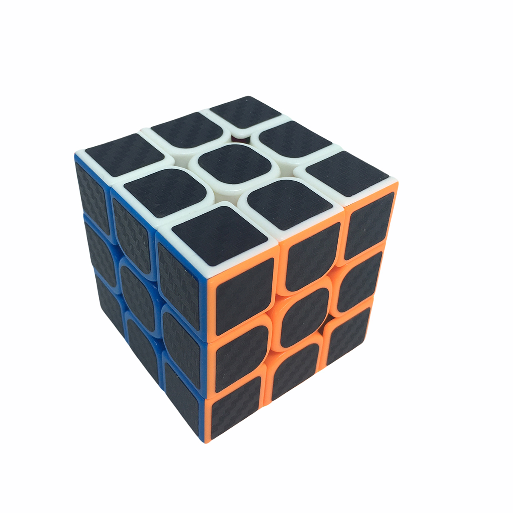

O cubo mágico 3x3 é um quebra-cabeça tridimensional formado por 6 faces de cores diferentes, cada uma com 9 peças móveis. O objetivo do jogo é girar as peças até que cada face fique com uma única cor. O cubo foi inventado em 1974 pelo professor húngaro de arquitetura e designer de jogos Ernő Rubik. Ele criou o cubo como uma ferramenta de ensino para seus alunos sobre conceitos de geometria e espaço tridimensional, mas o jogo se tornou um sucesso mundial e um dos jogos mais populares e desafiadores de todos os tempos.